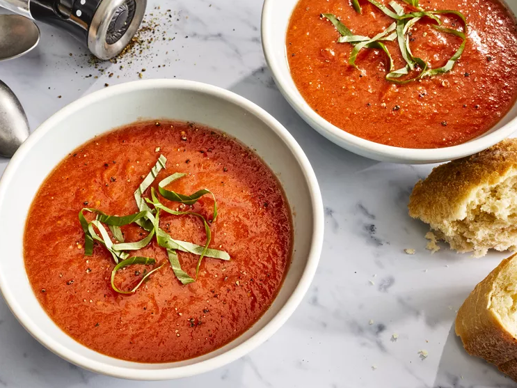

Tomato Soup

(Please click on the image above to follow the link to the original site and recipe!)
Tomato Soup: Quick, simple, delicious!
This tomato soup recipe uses fresh tomatoes and will remind you of your mom's famous cooking.
Sure the can of tomato soup works in a time crunch, but nothing beats the delicious flavors of
a soup you made from scratch! Prep time is 5 min, cook time 30 min, makes six servings.
Ingredients
- 4 cups chopped fresh tomatoes
- 2 cups chicken broth
- 4 cloves garlic
- 1 large slice of onion
- 2 tablespoons butter
- 2 tablespoons all-purpose flour
- 2 teaspoons white sugar, or to taste
- 1 teaspoon salt, or to taste
Steps
-
Gather all ingredients.
-
Combine tomatoes, chicken broth, garlic cloves, and a large slice of onion in a stockpot
over medium heat. Bring to a boil, and gently simmer for about 20 minutes to blend flavors.
-
Remove from heat and run the mixture through a food mill into a large bowl, or pan.
Discard any stuff left over in the food mill.
-
Melt butter over medium heat in the now empty stockpot. Stir in flour to make a roux by
cooking, whisking constantly, until mixture turns medium brown.
-
Gradually whisk in a bit of the tomato mixture to prevent lumps from forming, then stir
in the rest.
-
Season with sugar and salt to taste
-
Serve and enjoy!